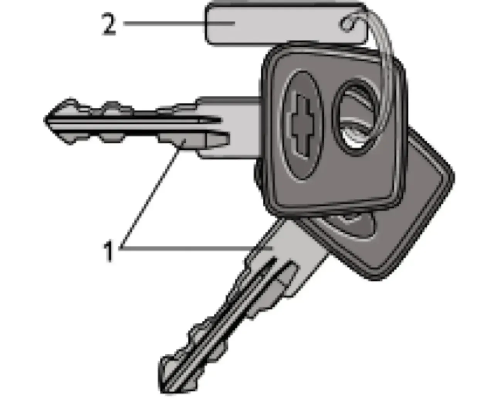

ОПИСАНИЕ АВТОМОБИЛЯ — I. Кузов и салон
Ключи для автомобиля
ключитранспондеркрасный ключбиркаиммобилизатор
К автомобилю прилагаются два ключа, каждый из которых служит как для открывания замков дверей, так и для включения зажигания. Номер ключей нанесён на бирке. Удалив бирку, Вы можете сохранить секретность ключей. Сохраняйте бирку: в случае утери ключа по её номеру Вы сможете изготовить новый ключ.
В головку ключей автомобиля, оснащённого электронной противоугонной системой, встроен транспондер — электронный ключ, индивидуальный код которого занесён в память электронного блока иммобилизатора.
Иммобилизатор блокирует запуск двигателя без предварительного считывания кода с транспондера и обеспечивает тем самым дополнительную защиту автомобиля от несанкционированного использования.

Примечание:
Ключ с чёрной головкой используется для повседневной эксплуатации. Ключ с красной вставкой является обучающим и применяется для активации системы и обучения рабочих ключей.
Ключ с чёрной головкой используется для повседневной эксплуатации. Ключ с красной вставкой является обучающим и применяется для активации системы и обучения рабочих ключей.
Предупреждение / внимание:
Ключ с красной вставкой необходимо хранить отдельно и не носить на одной связке с ключом с чёрной головкой, а использовать его только при утере ключа с чёрной головкой.
Ключ с красной вставкой необходимо хранить отдельно и не носить на одной связке с ключом с чёрной головкой, а использовать его только при утере ключа с чёрной головкой.